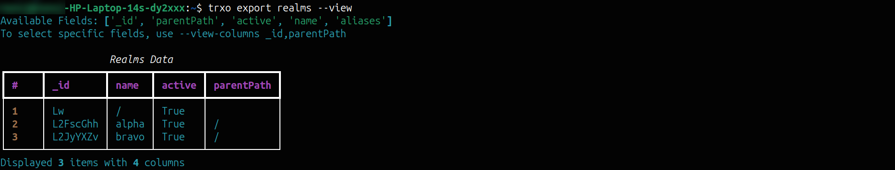

TRXO Usage Guide¶
This guide outlines the standard workflow for managing Ping Identity configurations.
1. Project Workflow¶
Start by creating a dedicated workspace for your specific migration or environment task.
Create a Project:
List Projects:
Switch Context:
2. Configuration¶
Initialize your project configuration for Authentication and Storage.
* For detailed Authentication options, see Project Setup & Auth Guide. * For detailed Storage Mode setup (Local vs Git), see Storage Setup Guide.View Current Configuration:
3. Export Commands¶
Export configurations from your source environment.
Basic Export¶
 Exporting AM scripts to local storage
Exporting AM scripts to local storage
General Options¶
Specific Realm: Export from a non-default realm (e.g., 'bravo' or root).
View Data (Dry Run): Preview data in the terminal without saving to file.
 Previewing realm configuration in the terminal
View Specific Columns: Restrict the view output to specific fields (e.g., just IDs and Names).
Local Storage Options (Filesystem Only)¶
Custom Directory: Save export files to a specific directory. Creates the directory if it doesn't exist.
Custom Filename: Save to a specific manual filename.
Specific Version: Tag the export file with a semantic version.
Git Storage Options (Git Mode Only)¶
Branch: Export to a specific branch. If the branch exists, it adds/updates files; if not, it creates the branch.
Commit Message: Provide a custom commit message describing the export.
CI/CD & Automation¶
Run exports without interactive prompts or project setup by passing credentials directly.
PingOne Advanced Identity Cloud (Service Account):
trxo export scripts \
--jwk-path /path/to/private.key \
--client-id service-account-client-id \
--sa-id service-account-uuid \
--base-url https://<tenant>.forgeblocks.com
PingAM (On-Premise):
trxo export scripts \
--auth-mode onprem \
--base-url https://am.example.com/am \
--onprem-username amAdmin \
--onprem-password SecurityPhrase1!
4. Import Commands¶
Import configurations into your target environment. Options vary based on Local or Git storage mode.
View Available Commands:
Local File System¶
Import configuration files from your local directory.
Standard Import: Imports from local file to default realm (alpha).
 Importing authentication configuration from a file
Importing authentication configuration from a file
Specific Realm: Import file content to a specific target realm.
Cherry-Pick: Import only specific items (single ID or comma-separated list).
Diff Mode: Compare the import file against the target environment before applying changes.
Sync Mode: Mirror the import data to the target (deletes extra items on server).
Force Import: Skip hash integrity checks if file was manually modified.
Git Mode¶
Import configurations directly from the linked Git repository.
Default Branch: Takes data from the currently checked-out branch.
Specific Branch: Import data from a specific branch.
Rollback: Automatically restore previous state if import fails (Git mode only).
CI/CD & Automation¶
PingOne Advanced Identity Cloud:
trxo import scripts --file <file-name> \
--jwk-path /path/to/private.key \
--client-id service-account-client-id \
--sa-id service-account-uuid \
--base-url https://<tenant>.forgeblocks.com
PingAM (On-Premise):
trxo import scripts --file <file-name> \
--auth-mode onprem \
--base-url https://am.example.com/am \
--onprem-username amAdmin \
--onprem-password SecurityPhrase1!
For more detailed explanations, see Advanced Features Guide.
5. Batch Operations¶
Execute multiple configuration commands in a single operation.
View Available Commands:
Batch Export¶
Export All: Runs the export for all supported commands.
Selected Commands: Export specific configuration types in one shot.
 Executing multiple export commands in batch mode
Executing multiple export commands in batch mode
Error Handling:
Pause execution immediately if any command fails (default is continue-on-error).
Batch Import¶
From Directory: Searches the directory for files matching the specified commands and imports them.
From Config File: Import using a JSON manifest file containing detailed paths and options.
For more details, see Batch Operations Guide.
6. Log Management¶
Manage and monitor TRXO application logs for troubleshooting and auditing.
View Recent Logs: Displays the last 20 lines of logs in the console.
Advanced Log View: Filter logs and follow live output.
*--lines: Specify the number of lines to display from the end.
* --follow: Monitor logs live as they are written.
* --level: Filter by log level (DEBUG, INFO, WARNING, ERROR).
View Log Configuration: Displays log file paths, current level, and retention settings.